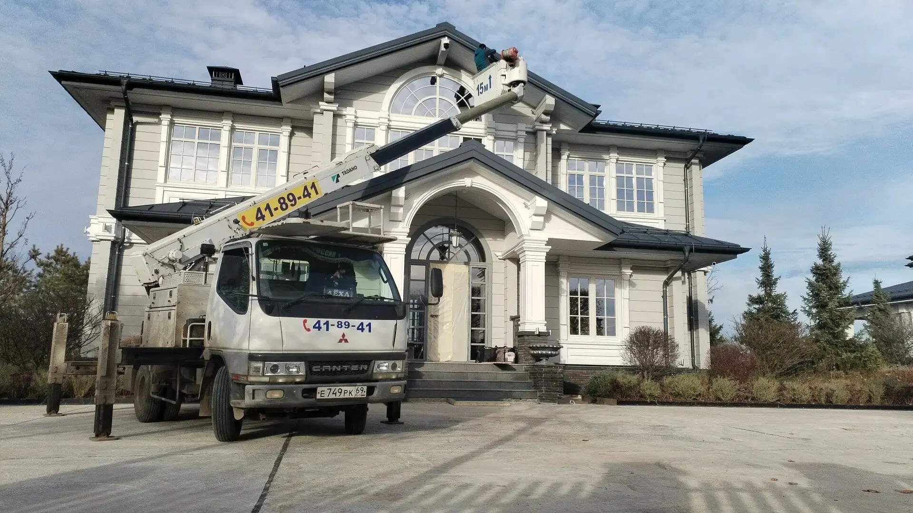
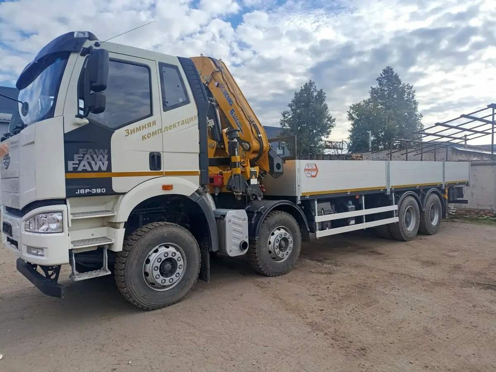
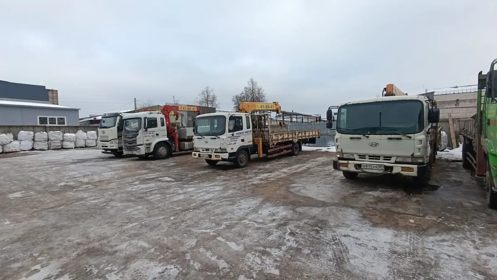
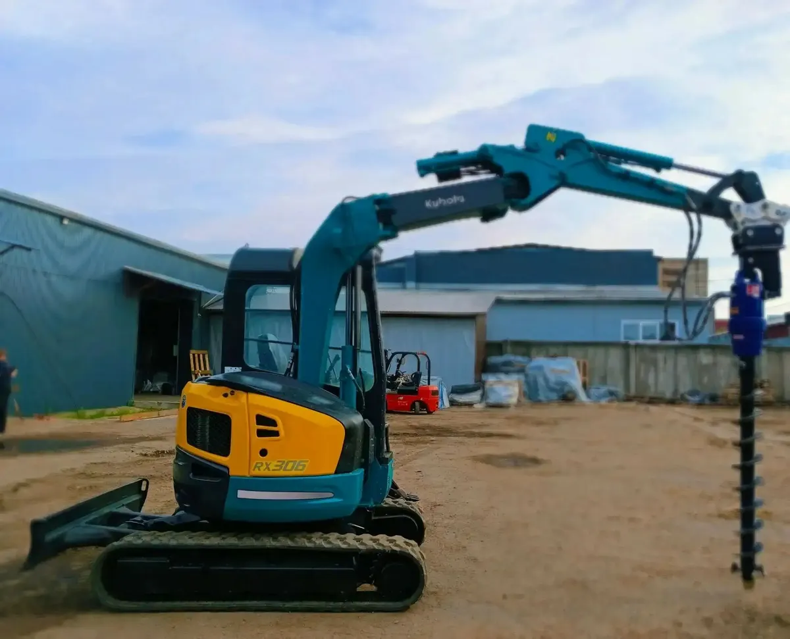

Аренда спецтехники · Тверь
Аренда спецтехники в Твери – подача в день звонка
Манипуляторы, автовышки, краны, экскаваторы и трактора – свой парк, поэтому техника почти всегда в наличии. Цену называем до подачи, операторы опытные.
- Свой автопарк – техника всегда в наличии
- Быстрая подача – так пишут в отзывах
- Опытные операторы и диспетчер
- Наличные, карта и безнал

Что в ставке, а что отдельно
Входит
- Техника с опытным оператором – отдельно оператора искать не нужно
- Ставка известна до подачи – по факту не растёт
- Быстрая подача: свой парк на базе в Твери
- Оплата наличными, картой или по безналу
Отдельно, если нужно
- Сверхурочные и работа за пределами Твери – считаем при заявке
- Грузчики и стропальщики – по договорённости
Ставки за смену и час
Технику подбираем под задачу: что поднимаем, копаем или возим. Минимальный заказ и точную ставку называем при заявке.
Подъём и перевозка
- Манипуляторборт + кран, погрузка и доставкаот 1 500 ₽ в час
- Автовышка 15–30 ммонтаж, кровля, фасадыот 1 800 ₽ в час
- Автокранподъём тяжестей на объектеуточнить
Земляные работы
- Экскаватор-погрузчиккопка, планировка, перевозка грунтаот 2 000 ₽ в час
- Мини-экскаватор с ямобуромтесные участки, сваи и ямыот 1 800 ₽ в час
- Трактор МТЗ, коммунальная техникауборка, вывоз, доставка сена и комбикормауточнить
База – Тверь, Подъездной проезд, 8. Работаем по городу и области, междугородние перевозки – по заявке.
Цены для примера. В вашем сайте будут ваши.
Как заказать технику
- 01
Заявка
Назовите задачу: что поднять, выкопать или привезти – можно фото объекта.
- 02
Подбор
Диспетчер подбирает машину под задачу и называет ставку до подачи.
- 03
Подача
Техника приезжает к оговорённому времени – в отзывах пишут «приехали во-время».
- 04
Работа
Оператор выполняет задачу, диспетчер на связи весь день.
- 05
Оплата
По факту работ: наличные, карта или счёт для организации.



Что обещаем в заявке
Техника в наличии
Свой парк: манипуляторы, вышки, краны, экскаваторы, трактора – «практически любая спецтехника», как пишут клиенты.
Подача к оговорённому времени
Быстрая подача – повторяющаяся фраза в отзывах на Картах.
Ставка не меняется по факту
Цену называем до подачи техники – в отзывах: «цены адекватные».
Опытные операторы
Водители и операторы в штате – «работают профи», «опытные водители».
Отзывы с Яндекс.Карт
«Нравится то что всегда есть в наличии практически любая спецтехника, манипуляторы, автовышки,кран ,трактора, МТЗ, цены адекватные, водители и руководство без нареканий»
tver8849 -. · 20 июня 2024
«Заказывали манипулятор. Приехали во-время, груз доставили быстро и аккуратно. Спасибо водителю и девочкам - диспетчерам.»
Марина З. · 13 декабря 2019
«Прекрасная) диспетчер. Опытные водители. Быстрая подача техники.»
Подсолнух Тверь · 7 мая 2022
Отзывы с карточки на Яндекс.Картах, без правок.
Частые вопросы
Какая техника есть в парке?
Манипуляторы, автовышки до 30 м, автокраны, экскаваторы и экскаваторы-погрузчики, мини-экскаватор с ямобуром, трактора МТЗ, дорожная и коммунальная техника.
Как быстро подадите технику?
Парк на своей базе в Твери, поэтому подача быстрая – в отзывах клиенты отдельно отмечают «быстрая подача техники». Точное время называем при заявке.
Как считается цена?
Ставка за час или смену – зависит от машины и задачи. Называем до подачи, по факту не меняется. Минимальный заказ уточняйте у диспетчера.
Как оплатить?
Наличными, картой или по безналу – для организаций выставляем счёт.
Назовите задачу – подберём технику
- Адрес
- Подъездной проезд, 8, офис 2, Тверь
- Часы
- Пн–вс 08:00–20:00
- Телефон
- +7 (4822) 41-89-41